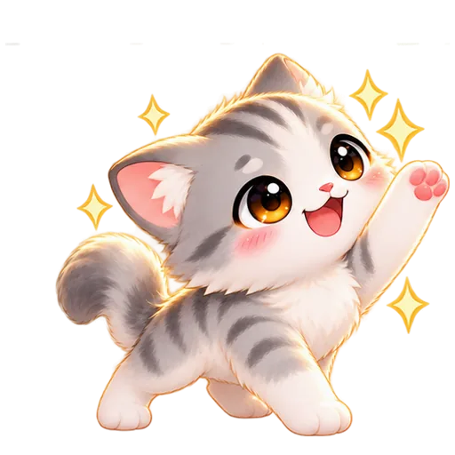
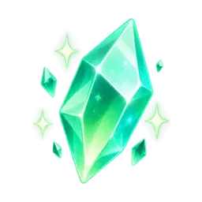

11월 18일 수요일 950
950
950오늘은20단어

나비Lv.3 · 다음 진화까지 63%
07 / 20
뜻 직접 쓰기 · 3연속 정답
extended
뜻을 입력하세요
키보드 자리
정답
extended · 연장된, 늘어난
야차전 · 브론즈 0승 0패950
950대결몬스터던전기록
VS
방식2분 · 4지선다
범위
판돈이기면 +10 · 지면 −10
놀이터950
950놀이터
33
오늘 남은 판
연습 결과 · 3과 · 4과
85점
20개 중 17개 정답 · 2분 41초

코인+24
경험치+40 연속 학습8일
연속 학습8일